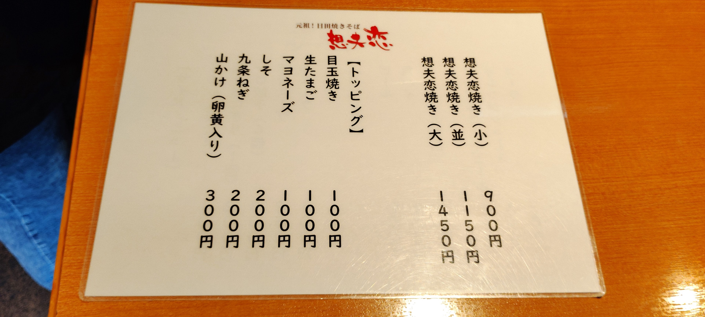
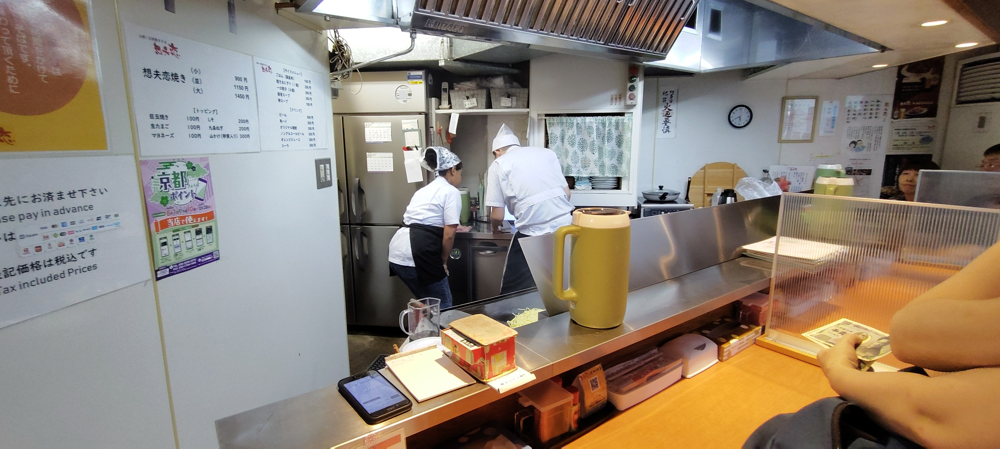
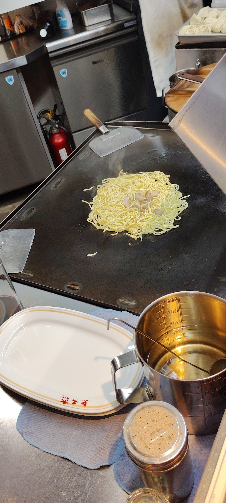
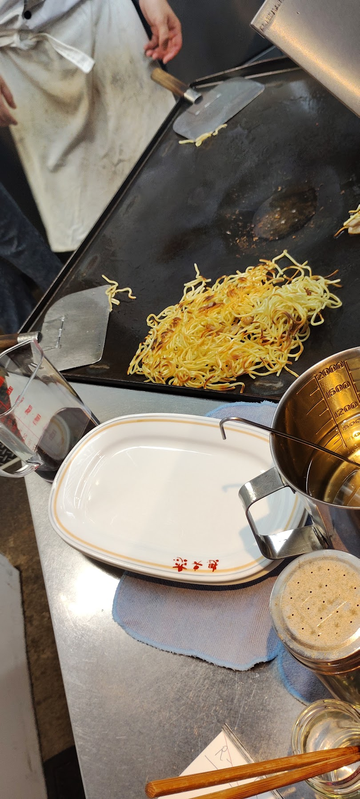
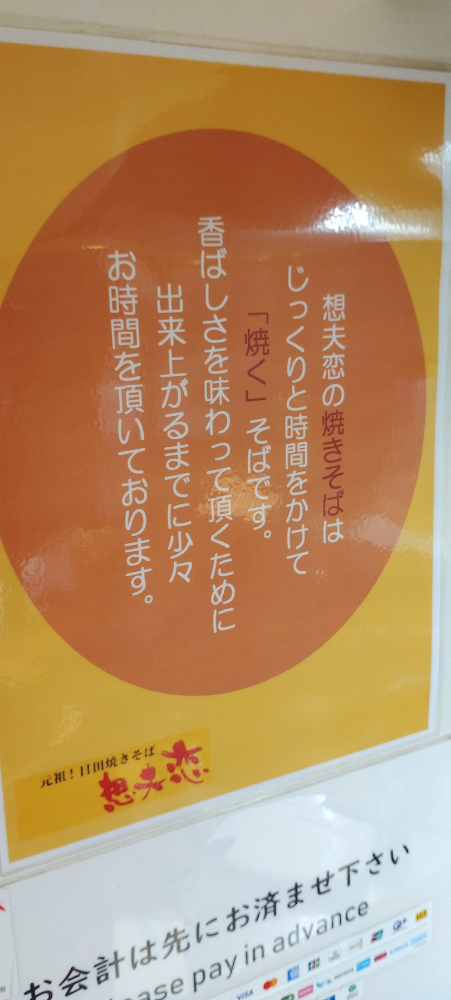
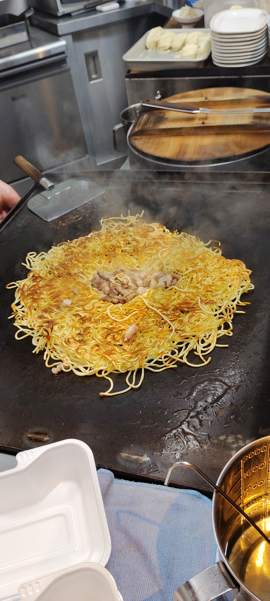
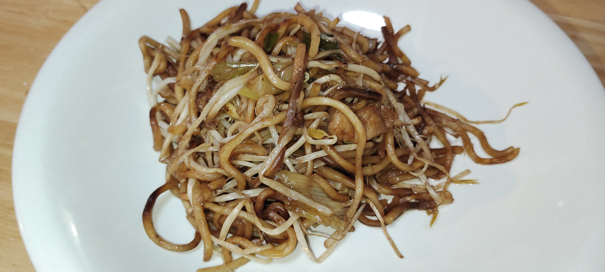

こんにちは、ろぶーです！今回は年に一度の「うなぎの日」ということで京都へ行ってきた帰り道、九州で有名な「想夫恋（そうふれん）」の焼きそばが京都でも食べられると聞いて立ち寄ってきました。
実はうちの彼女のお母さんから「美味しいお店があるよ」と教えてもらったのがきっかけ。お昼のうなぎでお腹いっぱいだったこともあり、少し時間を調整して夕方の開店時間（17:30）に合わせて訪問してみました。
1. 開店直後に訪問！メニューはこだわりの「焼きそば」一本勝負
夕方の開店時間に合わせてお店に到着したのですが、なんとすでにカウンターには1組のお客さんが！早い時間から人気なのが伝わってきて驚きです。
席についてメニューを見てみると、メインは本当に「焼きそば（大・並・小）」の3種類のみ！余計なメニューは置かず、焼きそば一本で勝負している姿勢に職人の強いこだわりを感じます。
サイズを選んだあとは、お好みでトッピング（目玉焼き、生たまご、マヨネーズ、九条ねぎ、山かけ等）を追加するスタイルです。

2. 目の前で広がるライブ感！鉄板で両面を焼き固める職人技
カウンター席の目の前が鉄板になっており、注文が入ると職人さんが手際よく焼き始めてくれます。鉄板から立ち上る香ばしいソースの香りが食欲をそそります！
作り方をじっくり見ていると、一般的な焼きそばのように炒めるのではなく、麺に焦げ目がつくくらい両面をしっかり「よく焼き」に焼き固めていました。
- 生麺を鉄板に広げ、焦げ目がつくまで両面をじっくり「よく焼き」にする
- 横でお肉を香ばしく焼き上げる
- 山盛りのお野菜の上に、焦げ目のついた麺とお肉をのせて焼く
- 計量された秘伝ソースを回しかけ、絶妙な手さばきで手早く仕上げる
一連の手さばきに無駄がなく、見ているだけでどんどん期待が高まります。





3. 今回はお腹いっぱいでテイクアウト！次回はお店で出来立てを
お昼のうなぎでお腹がまだ満たされていたこともあり、今回は残念ながら店内で食べるのは見送り、テイクアウトでお持ち帰りすることにしました。
持ち帰って自宅でいただいたのですが、麺の香ばしいパリパリ感とシャキシャキのもやし、旨味たっぷりのソースが絡み合ってとても美味しかったです！
でもやっぱり、あの目の前の鉄板から運ばれてくる「熱々の出来立て」をそのまま店内でハフハフしながら食べてみたい……！次回京都に来るときは、しっかりお腹を空かせてカウンターで熱々をいただきたいと思います。

店舗情報
- 店名
- 想夫恋 京都七条大宮店
- 住所
- 〒600-8268 京都府京都市下京区七条通大宮東入大工町96
- 営業時間
- 昼 11:00〜14:30／夜 17:30〜20:00
- 定休日
- 水曜日・木曜日（祝日は営業）
- 電話
- 075-708-6787
- アクセス
- JR梅小路京都西駅または各線京都駅より徒歩・市バス
公式店舗ページでは、土日祝の14:30〜17:30をテイクアウト営業と案内しています。ただし月ごとのお知らせで実施日が変わる場合があります。営業時間、店休日、テイクアウト受付、価格は訪問前に公式情報をご確認ください。
公式情報
住所、営業時間、店休日、電話番号は2026年9月7日に公式店舗ページで確認しました。価格と感想は2026年8月23日の訪問時の記録です。